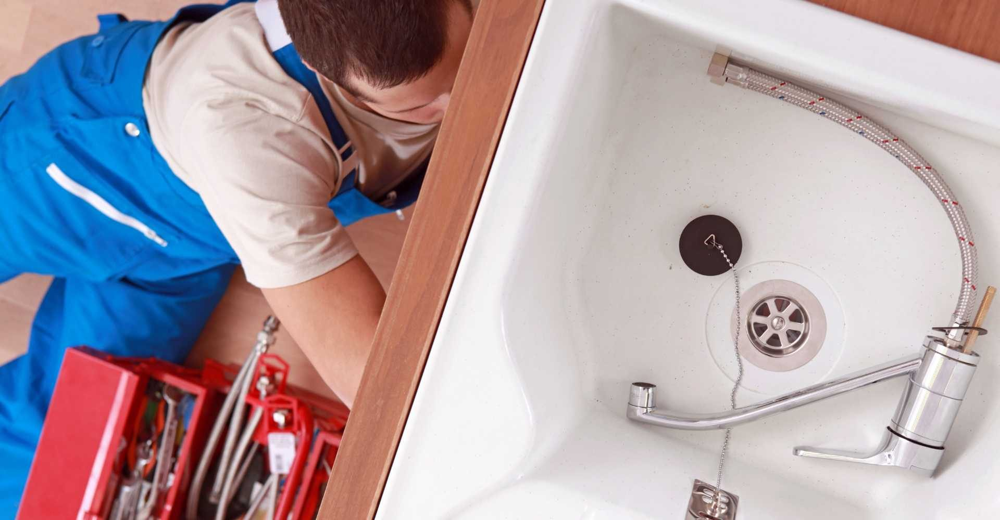
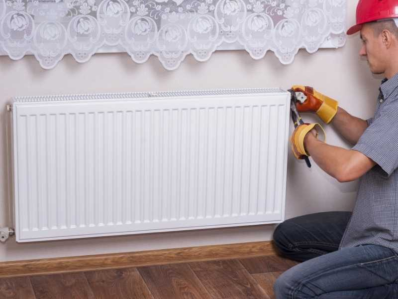
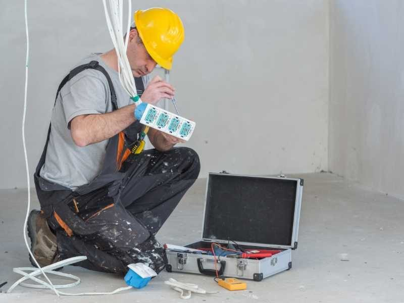

Electricite generale
Tableaux electriques, mise aux normes, eclairage, VMC, telesurveillance et visiophonie. Une installation fiable et securisee.
En savoir plus
Electricite, plomberie, chauffage et climatisation. Un savoir-faire familial transmis depuis 3 generations, au service des particuliers.
La garantie d'une installation conforme aux normes en vigueur.
Un entretien adapte, qu'il soit preventif ou curatif.
Notre priorite : assurer le bon fonctionnement de vos equipements.
De jour comme de nuit, nous intervenons dans les meilleurs delais.
Dotee d'un savoir-faire pointu transmis de pere en fils depuis 3 generations, l'entreprise familiale SPEC TOBI intervient aupres des particuliers pour tous leurs travaux d'electricite, de plomberie, de chauffage et de climatisation.
Qu'il s'agisse d'une installation neuve, de maintenance ou d'entretien, notre artisan se deplace dans les meilleurs delais pour vous assurer des equipements fiables et performants. Nous prenons egalement en charge :

En neuf comme en renovation, un seul artisan pour tous vos travaux techniques, partout sur le bassin nicois.
Tableaux electriques, mise aux normes, eclairage, VMC, telesurveillance et visiophonie. Une installation fiable et securisee.
En savoir plus
Installation, depannage et recherche de fuite par camera. Creation de salles de bains, y compris adaptees aux personnes a mobilite reduite.
En savoir plus
Pompes a chaleur air/eau et air/air, chauffage et panneaux solaires. Du confort toute l'annee et des economies d'energie.
En savoir plus


Reponse rapide et devis gratuit, sur Nice et tout le bassin azureen.